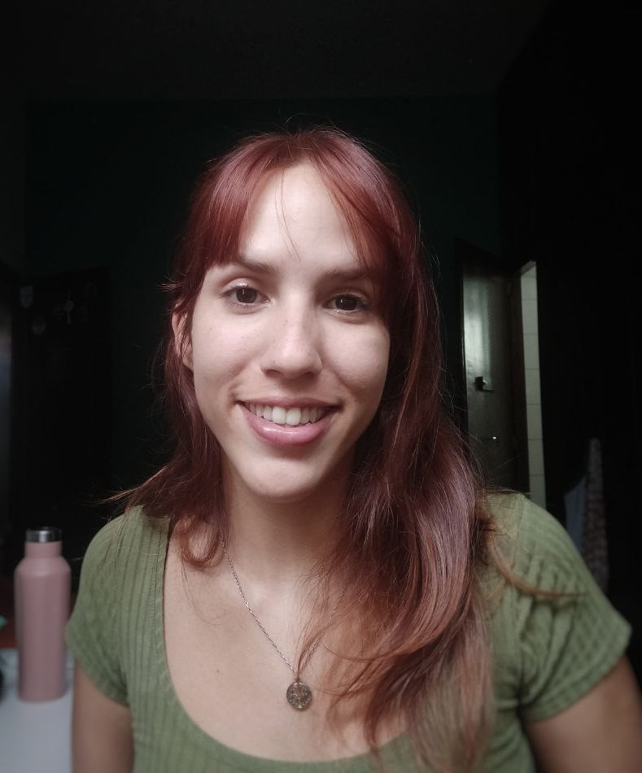

Oie, eu sou a Julie Anne

Ajude a alcançar meu sonho de um doutorado!
Mestre em Genética e Melhoramento de Plantas com bolsa nota 10 FAPERJ pela Universidade Estadual do Norte Fluminense, desejo agora realizar meu sonho de cursar um programa de doutorado na Alemanha.
Após a experiência de 1 ano como Au Pair na Alemanha, tive a oportunidade de encontrar programas de PhD que fazem sentido para meus sonhos de carreira. Para isso, é necessário comprovar que possuo renda para me manter aqui ao menos por um ano a fim de conseguir a permissão de residência.
Meu Lattes